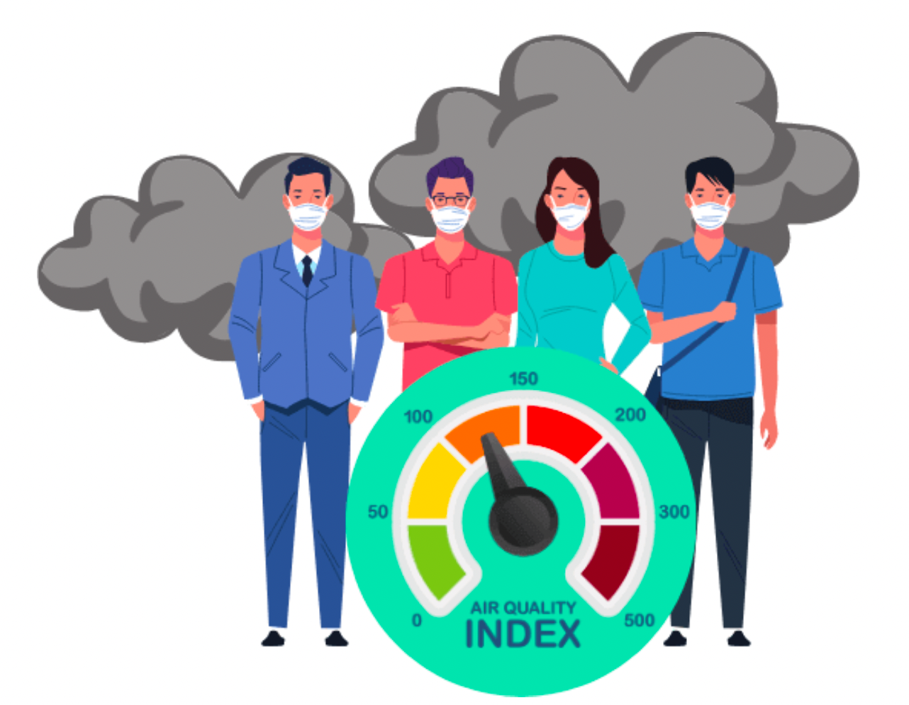

Data Scientist | Machine Learning | AI
📍 Bengaluru, India | ✉️ meghagulati03@gmail.com
I'm a data scientist with hands-on experience developing and deploying machine learning solutions for real-world problems in credit risk prediction, consumer behavior modeling, computer vision, and time-series forecasting.
Currently pursuing a Master’s in Computer Science from Georgia Tech (OMSCS), with a specialization in Machine Learning & AI.
At Publicis Sapient, I’ve contributed to building credit default risk models for Goldman Sachs using algorithms like XGBoost, Random Forest, and Logistic Regression — optimizing for ROC-AUC and F1 to drive recovery strategies and financial outcomes.
My work also includes designing interpretable grading systems, integrating bureau scores, and aligning model outputs with business actions like hardship and settlement programs, ensuring both regulatory compliance and strategic impact.
I have also worked on face mask detection using YOLOv5 on high-performance computing clusters, and built Bayesian forecasting models using PyMC for air quality prediction. My skill set spans Python, SQL, TensorFlow, PyMC, XGBoost, UMAP, and cloud tools like GCP and Azure ML.
This portfolio showcases projects from domains such as finance, computer vision, and environmental analytics — reflecting my passion for building ML solutions that balance performance, interpretability, and scalability.
Face Mask Detection Using YOLOv5
This project implements a face mask detection model using the YOLOv5 framework. It classifies individuals into three categories: wearing a mask, not wearing a mask, and wearing a mask incorrectly. The dataset was sourced from Kaggle, preprocessed, augmented, and trained using YOLOv5 with hyperparameter modifications.
Bayesian Air Quality Forecasting
This project uses Bayesian Inference and Gibbs Sampling to forecast PM2.5 levels, a key indicator of air quality, in India. It applies Bayesian ARIMA models to capture complex temporal dependencies and uncertainties in air pollution data.
Consumer Debt Analysis
This project explores U.S. consumer debt repayment behavior using Machine Learning and Time Series Analysis. It predicts repayment trends within five years of charge-off and forecasts financial trends pre- and post-COVID. The analysis includes classification models, time-series analysis, and interactive Tableau visualizations to examine regional and macroeconomic factors. The project is tested on Windows (with AzureML compatibility issues on M1/M2 silicon chips).